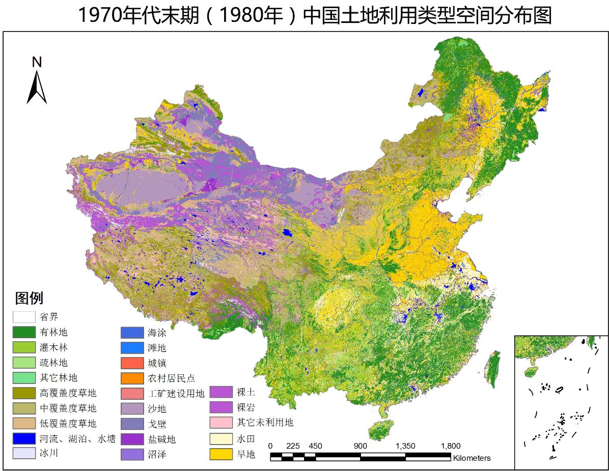
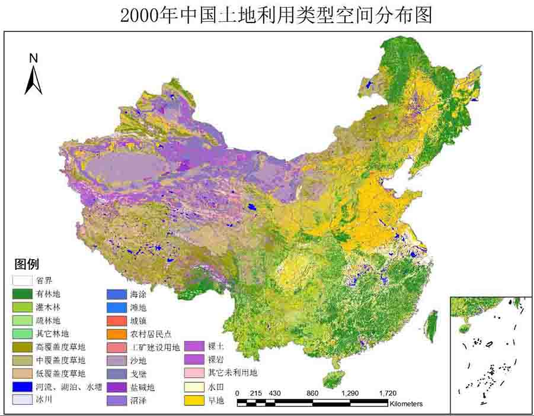
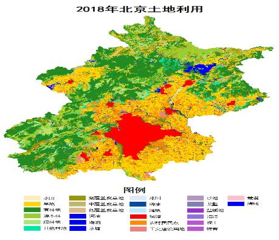
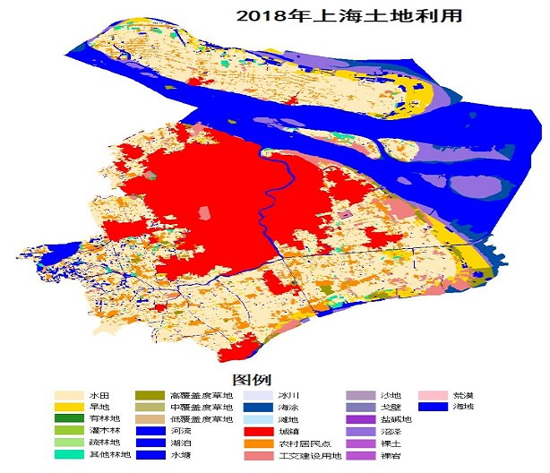
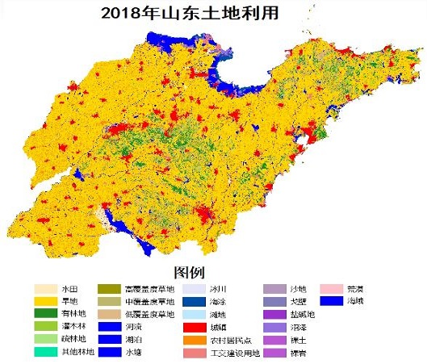
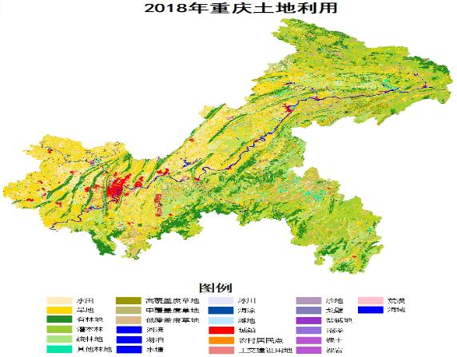
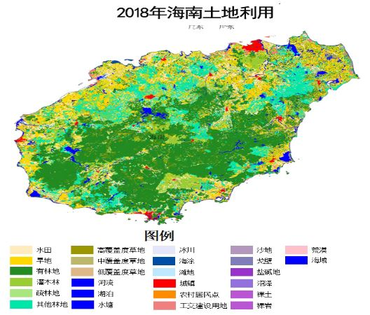

中国土地利用遥感监测数据（更新至2020年）
Remotely sensed data of land use in China
数据概况
中国土地利用遥感监测数据来源于中国多时相土地利用现状数据库，该数据库是在国家科技支撑计划、中国科学院知识创新工程等多项重大科技项目的支持下，经过多年的积累而建立的覆盖全国陆地区域的数据库。
本站提供的数据集来自中国科学院资源环境科学数据中心，包括1970年代末期（1980年）、1980年代末期（1990年）、1995年、2000年、2005年、2010年、2015年、2018年和2020年等数据，数据生产制作是以各期Landsat TM/ETM遥感影像为主要数据源，在前一年数据成果基础上，通过人工目视解译生成，数据可靠、质量较高。
本站提供1km空间分辨率的数据，另外有100m、30m空间分辨率的栅格数据和矢量数据，可以访问中国科学院资源环境科学数据中心 （点击访问）获取
空间范围：全国（各省）
数据类型：栅格 | ESRI GRID
空间分辨率：1 km
投影坐标：Krasovsky 1940 Albers
生产时间：1980 至 2020
数据预览







分类系统说明
土地利用类型包括耕地、林地、草地、水域、居民地和未利用土地等6个一级类型以及25个二级类型。
分类系统说明表
| 代码编号 | 地类名称 | 代码编号 | 地类名称 | 含义说明 |
|---|---|---|---|---|
| 1 | 耕地 | 种植农作物的土地，包括熟耕地、新开荒地、休闲地、轮歇地、草田轮作物地；以种植农作物为主的农果、农桑、农林用地；耕种三年以上的滩地和海涂。 | ||
| 11 | 水田 | 有水源保证和灌溉设施，在一般年景能正常灌溉，用以种植水稻，莲藕等水生农作物的耕地，包括实行水稻和旱地作物轮种的耕地。 111山地水田112丘陵水田113平原水田114 >25度坡地水田 | ||
| 12 | 旱地 | 无灌溉水源及设施，靠天然将水生长作物的耕地；有水源和浇灌设施，在一般年景下能正常灌溉的旱作物耕地；以种菜为主的耕地；正常轮作的休闲地和轮歇地。 121山地旱地122丘陵旱地123平原旱地124>25度坡地旱地 | ||
| 2 | 林地 | 生长乔木、灌木、竹类、以及沿海红树林地等林业用地。 | ||
| 21 | 有林地 | 郁闭度>30%的天然林和人工林。包括用材林、经济林、防护林等成片林地。 | ||
| 22 | 灌木林 | 郁闭度>40%、高度在2米以下的矮林地和灌丛林地。 | ||
| 23 | 疏林地 | 林木郁闭度为10-30%的林地。 | ||
| 24 | 其他林地 | 未成林造林地、迹地、苗圃及各类园地（果园、桑园、茶园、热作林园等）。 | ||
| 3 | 草地 | 以生长草本植物为主，覆盖度在5%以上的各类草地，包括以牧为主的灌丛草地和郁闭度在10%以下的疏林草地。 | ||
| 31 | 高覆盖度草地 | 覆盖>50%的天然草地、改良草地和割草地。此类草地一般水分条件较好，草被生长茂密。 | ||
| 32 | 中覆盖度草地 | 覆盖度在>20-50%的天然草地和改良草地，此类草地一般水分不足，草被较稀疏。 | ||
| 33 | 低覆盖度草地 | 覆盖度在5-20%的天然草地。此类草地水分缺乏，草被稀疏，牧业利用条件差。 | ||
| 4 | 水域 | 天然陆地水域和水利设施用地。 | ||
| 41 | 河渠 | 天然形成或人工开挖的河流及主干常年水位以下的土地。人工渠包括堤岸。 | ||
| 42 | 湖泊 | 天然形成的积水区常年水位以下的土地。 | ||
| 43 | 水库坑塘 | 人工修建的蓄水区常年水位以下的土地。 | ||
| 44 | 永久性冰川雪地 | 常年被冰川和积雪所覆盖的土地。 | ||
| 45 | 滩涂 | 沿海大潮高潮位与低潮位之间的潮浸地带。 | ||
| 46 | 滩地 | 河、湖水域平水期水位与洪水期水位之间的土地。 | ||
| 5 | 城乡工矿居民用地 | 城乡居民点及其以外的工矿、交通等用地。 | ||
| 51 | 城镇用地 | 大、中、小城市及县镇以上建成区用地。 | ||
| 52 | 农村居民点 | 独立于城镇以外的农村居民点。 | ||
| 53 | 其它建设用地 | 厂矿、大型工业区、油田、盐场、采石场等用地以及交通道路、机场及特殊用地。 | ||
| 6 | 未利用土地 | 目前还未利用的土地，包括难利用的土地。 | ||
| 61 | 沙地 | 地表为沙覆盖，植被覆盖度在5％以下的土地，包括沙漠，不包括水系中的沙漠。 | ||
| 62 | 戈壁 | 地表以碎砾石为主，植被覆盖度在5%以下的土地。 | ||
| 63 | 盐碱地 | 地表盐碱聚集，植被稀少，只能生长强耐盐碱植物的土地。 | ||
| 64 | 沼泽地 | 地势平坦低洼，排水不畅，长期潮湿，季节性积水或常年积水，表层生长湿生植物的土地。 | ||
| 65 | 裸土地 | 地表土质覆盖，植被覆盖度在5％以下的土地。 | ||
| 66 | 裸岩石质地 | 地表为岩石或石砾，其覆盖面积>5％的土地。 | ||
| 67 | 其它 | 其它未利用土地，包括高寒荒漠，苔原等。 |
数据下载
可供下载数据的省份、地区列表如下，目前仅提供省级范围数据下载。
中国省级、地市级行政区划可以参考 国家基础GIS数据
下载说明
点击年份按钮，在列表中选择想要下载的年份，点击“下载”即可
默认下载的数据为最新的年份
中国土地利用数据列表
| 编号 | 省级 | 数据类型 | 年份(选择) | 下载 |
|---|
本博客将不定期上传数据，数据列表持续更新中......
如果需要的数据不在列表中，可以在页面下方评论区留言，说明需要的年份、省份或地区，优先上传！
建议使用Google浏览器，IE内核浏览器可能不正常显示下载按钮等！
Fighting, GISer!
最新博文